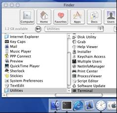

What is Windows XP
nWindows is an Operating
System
nAn Operating System is the program that controls the hardware of
your computer, and gives you an interface that allows you and other programs to manage your computer.
nOther Operating Systems:
Mac OS
Linux
Windows 2000
Windows 3.1

What Mac
OS looks like